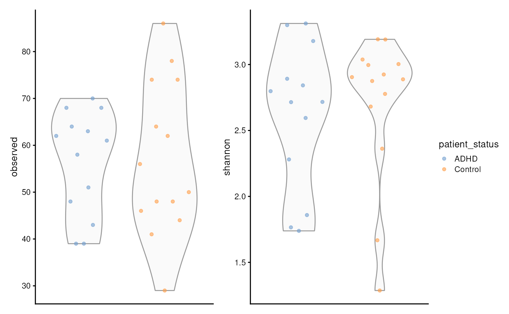

Authors: Axel Dagnaud, Noah de Gunst, Tuomas Borman, Leo Lahti.
Version: 1.0
Last modified: 11 July, 2024.
 English
English  French
French 
Introduction
Bonjour et bienvenue dans un workflow complet utilisant les derniers outils R/Bioconductor pour la science des données du microbiome. Dans ce tutoriel, nous vous guiderons à travers quelques étapes de base d’une étude d’analyse de composition utilisant OMA. Celles-ci seront applicables à presque tous vos projets et vous aideront à comprendre les concepts fondamentaux qui propulseront 🚀 vos futures analyses du microbiome.
Importation des données
Lors de l’utilisation de packages pour le microbiome, il existe de nombreuses façons différentes d’importer vos données. Commençons par charger les packages requis:
# List of packages that we need
packages <- c(
"ggplot2", "knitr", "mia", "dplyr", "miaViz", "vegan", "DT",
"scater", "patchwork", "sechm", "plotly"
)
# Get packages that are already installed installed
packages_already_installed <- packages[ packages %in% installed.packages() ]
# Get packages that need to be installed
packages_need_to_install <- setdiff( packages, packages_already_installed )
# Loads BiocManager into the session. Install it if it not already installed.
if( !require("BiocManager") ){
install.packages("BiocManager")
library("BiocManager")
}
# If there are packages that need to be installed, installs them with BiocManager
# Updates old packages.
if( length(packages_need_to_install) > 0 ) {
install(packages_need_to_install, ask = FALSE)
}
# Load all packages into session. Stop if there are packages that were not
# successfully loaded
pkgs_not_loaded <- !sapply(packages, require, character.only = TRUE)
pkgs_not_loaded <- names(pkgs_not_loaded)[ pkgs_not_loaded ]
if( length(pkgs_not_loaded) > 0 ){
stop(
"Error in loading the following packages into the session: '",
paste0(pkgs_not_loaded, collapse = "', '"), "'")
}Vous pouvez choisir d’utiliser vos propres données ou l’un des ensembles de données intégrés fournis par mia que vous trouverez ici OMA:
Dans ce tutoriel, nous utiliserons l’ensemble de données Tengeler2020. Cet ensemble de données a été créé par A.C. Tengeler pour essayer de démontrer l’impact des microbiomes altérés sur la structure du cerveau. Voici comment nous pouvons charger les données dans notre environnement R :
data("Tengeler2020", package="mia")
tse <- Tengeler2020Bien sûr, il existe d’autres moyens d’importer vos données en
utilisant le package
mia. Ceux-ci incluent : utiliser vos propres
données ( OMA)
ou convertir un objet existant en un objet
TreeSummarizedExperiment comme indiqué dans cette
section : OMA.
Stockage des données du microbiome
TreeSummarizedExperiment ou objet TreeSE est le type
d’objet utilisé dans le package
mia pour stocker vos données. C’est un type de données
polyvalent et multi-usages qui permet de stocker et d’accéder aux
données de manière efficace.
Voici un rappel rapide sur la façon d’accéder à certains types de données :
Vous pouvez accéder aux assays assays ( OMA) de cette manière :
assay(tse)[1:5,1:10]
#> A110 A12 A15 A19 A21 A23 A25 A28 A29 A34
#> Bacteroides 17722 11630 0 8806 1740 1791 2368 1316 252 5702
#> Bacteroides_1 12052 0 2679 2776 540 229 0 0 0 6347
#> Parabacteroides 0 970 0 549 145 0 109 119 31 0
#> Bacteroides_2 0 1911 0 5497 659 0 588 542 141 0
#> Akkermansia 1143 1891 1212 584 84 700 440 244 25 1611Alors que colData est accessible via :
# Transform the colData to a dataframe
tse_df_colData <- as.data.frame(colData(tse))
# Show as an interactive table
datatable(tse_df_colData,options = list(pageLength = 5),rownames = FALSE)rowData contient des données sur les caractéristiques des échantillons, notamment des informations taxonomiques.
tse_df_rowData <- as.data.frame(rowData(tse))
datatable(tse_df_rowData, options = list(pageLength = 5)) Ici rowData(tse) renvoie un DataFrame avec 151 lignes et
7 colonnes. Chaque ligne représente un organisme et chaque colonne un
niveau taxonomique.
Pour illustrer la structure d’un
TreeSummarizedExperiment, voici un article de @Huang2021 qui utilise ce type d’objet. De plus,
veuillez consulter la figure 1 ci-dessous.

Manipulation des données
Dans certains cas, vous devrez peut-être modifier vos données pour
obtenir les résultats souhaités. Dans cette section, nous verrons
comment agglomérer les données, les sous-ensembles et plus encore. Un
TreeSummarizedExperiment permet une manipulation astucieuse
des données en utilisant le package
dplyr.
Sous-ensembles
Dans certains cas, vous n’aurez peut-être besoin d’utiliser qu’une
partie de votre TreeSummarizedExperiment d’origine.
En utilisant l’ensemble de données Tengeler2020, nous pouvons nous concentrer sur une certaine cohorte par exemple. Cela est assez simple :
tse_subset_by_sample <- tse[ , tse$cohort == "Cohort_1"]Cela créera un objet TreeSummarizedExperiment ne
contenant que les échantillons de la première cohorte.
Agglomération des données
Pour pousser davantage votre analyse de données et vous concentrer
sur sa distribution à un rang taxonomique spécifique, il peut être
bénéfique d’agglomérer vos données à ce niveau particulier. La fonction
agglomerateByRank() simplifie ce processus, permettant des
analyses plus fluides et efficaces. Voici un exemple :
tse.agglomerated <- agglomerateByRank(tse, rank = "Phylum")
# Check
datatable(
data.frame(rowData(tse.agglomerated)),
options = list(pageLength = 5),rownames = FALSE)Génial ! Maintenant, nos données sont confinées aux informations taxonomiques jusqu’au niveau du Phylum, permettant à l’analyse de se concentrer sur ce rang spécifique. Dans le reste du workflow, nous n’utiliserons pas les données agglomérées, mais tout le code ci-dessous peut être utilisé sur celles-ci.
Indicateurs
Diversité de la communauté
La diversité de la communauté en microbiologie est mesurée par plusieurs indices : - la richesse en espèces (nombre total d’espèces) - l’équitabilité (répartition des espèces au sein d’un microbiome) - la diversité (combinaison des deux)
Le coefficient de @Hill combine ces mesures en une seule équation. Toutes ces variations sont appelées diversité alpha.
# Estimate (observed) richness
tse_alpha <- addAlpha(
tse,
assay.type = "counts",
index = "observed",
name = "observed")
# Check some of the first values in colData
tse_alpha$observed |> head()
#> [1] 68 51 68 62 58 61Le résultat montre les valeurs de richesse estimées pour différents échantillons ou emplacements au sein de l’ensemble de données. Il donne une idée de la diversité de chaque échantillon en termes de nombre d’espèces différentes présentes. Nous pouvons ensuite créer un graphique pour visualiser cela.
plotColData(
tse_alpha,
"observed",
"cohort",
colour_by = "patient_status") +
theme(axis.text.x = element_text(angle=45,hjust=1)) +
labs(y=expression(Richness[Observed]))
Pour aller encore plus loin, nous pouvons également comparer l’indice de Shannon estimé à la richesse observée. Shannon quantifie la diversité en termes à la fois du nombre d’espèces différentes (richesse) et de l’uniformité de leur répartition (abondance) et est calculé comme suit :
pi étant la proportion d’un certain microorganisme.
D’abord, nous pouvons facilement calculer cette mesure et l’ajouter à notre TreeSE.
Nous pouvons également comparer les deux mesures de diversité en produisant les graphiques suivants.
# Create the plots
plots <- lapply(
c("observed", "shannon"),
plotColData,
object = tse_alpha,
x = "patient_status",
colour_by = "patient_status")
# Fine-tune visual appearance
plots <- lapply(plots, "+",
theme(
axis.text.x = element_blank(),
axis.title.x = element_blank(),
axis.ticks.x = element_blank()))
# Plot the figures
(plots[[1]] | plots[[2]]) +
plot_layout(guides = "collect")
Il est très important de faire toutes ces comparaisons afin de quantifier la diversité et de comparer les échantillons dans nos données en utilisant différentes mesures. - Vous pouvez trouver d’autres types de comparaisons directement dans le livre OMA.
Similarité de la communauté
La similarité de la communauté fait référence à la manière dont les microorganismes se ressemblent en termes de composition et d’abondance des différents taxons microbiens. Cela peut nous aider à comprendre dans quelle mesure différents échantillons se ressemblent et à trouver des informations clés. Cependant, en analyse de microbiome, il est plus courant de mesurer la dissimilarité/diversité bêta entre deux échantillons A et B en utilisant la mesure de Bray-Curtis qui est définie comme suit :
Heureusement pour nous, le package mia fournit un moyen facile de calculer l’abondance relative pour notre TreeSE en utilisant la méthode transformAssay.
tse <- transformAssay(
tse,
assay.type = "counts",
method = "relabundance")Cela prendra l’assay des comptes d’origine et appliquera le calcul des abondances relatives. Le résultat est une matrice avec les identifiants des échantillons en lignes et les abondances relatives pour chaque taxon dans ces échantillons en colonnes. Il peut être consulté dans les assays du tse :
assay(tse, "relabundance")[5:10,1:10]
#> A110 A12 A15 A19 A21
#> Akkermansia 0.0305664 0.046594717 0.0753872 0.014894160 0.013226264
#> Bacteroides_3 0.0000000 0.160112360 0.0000000 0.113618975 0.096047866
#> Parabacteroides_1 0.0000000 0.005470136 0.0000000 0.003289977 0.004408755
#> Bacteroides_4 0.0000000 0.089370195 0.0000000 0.019663351 0.004566210
#> Bacteroides_5 0.0000000 0.066060516 0.0000000 0.013542464 0.006928043
#> Parabacteroides_2 0.0000000 0.004632367 0.0000000 0.002907422 0.005196032
#> A23 A25 A28 A29 A34
#> Akkermansia 0.1281817 0.040124020 0.035929907 0.014108352 0.07693042
#> Bacteroides_3 0.0000000 0.047601678 0.075246650 0.198645598 0.00000000
#> Parabacteroides_1 0.0000000 0.002279774 0.003239582 0.004514673 0.00000000
#> Bacteroides_4 0.0000000 0.064654386 0.033573848 0.134311512 0.00000000
#> Bacteroides_5 0.0000000 0.055079336 0.064791636 0.132054176 0.00000000
#> Parabacteroides_2 0.0000000 0.002188583 0.002797821 0.003386005 0.00000000Ensuite, nous pouvons ajouter la dissimilarité de Bray-Curtis :
# Run PCoA on relabundance assay with Bray-Curtis distances
tse <- addMDS(
tse,
FUN = vegdist,
method = "bray",
assay.type = "relabundance",
name = "MDS_bray")Dans notre cas, l’assay contient 151 lignes et 27 colonnes. Avoir autant de colonnes et donc de dimensions peut être problématique pour visualiser la dissimilarité.
Pour visualiser la dissimilarité entre les différents échantillons, nous pouvons effectuer une analyse en coordonnées principales sur l’assay nouvellement créé. Cela projette essentiellement les dimensions de Bray-Curtis sur un espace inférieur tout en conservant autant de variation que possible, les valeurs projetées étant appelées coordonnées principales.
mia fournit certaines techniques de réduction de
dimension, telles que dbRDA. De plus, nous pouvons utiliser le package
scater de Bioconductor et le package vegan,
créé par @R_vegan pour transformer la
dissimilarité en distances réelles pouvant être visualisées :
# Create ggplot object
p <- plotReducedDim(tse, "MDS_bray",colour_by = "cohort")
# Convert to an interactive plot with ggplotly
ggplotly(p)Cependant, les axes ne sont pas très informatifs et la quantité de variance capturée par l’algorithme n’est nulle part indiquée. Nous pouvons ajuster le graphique pour montrer plus d’informations comme suit :
# Calculate explained variance
e <- attr(reducedDim(tse, "MDS_bray"), "eig")
rel_eig <- e / sum(e[e > 0])
# Add explained variance for each axis on the plot
p <- p + labs(
x = paste("PCoA 1 (", round(100 * rel_eig[[1]], 1), "%", ")", sep = ""),
y = paste("PCoA 2 (", round(100 * rel_eig[[2]], 1), "%", ")", sep = ""))
# Reonvert to an interactive plot with ggplotly
ggplotly(p)Et voilà ! Chaque axe montre la quantité de variance ou dans notre cas de dissimilarité retenue par chaque coordonnée principale. Vous pouvez également ajouter d’autres options pour colorier par une certaine caractéristique par exemple. Vous pouvez en savoir plus dans OMA.
Visualisation des données
Les cartes de chaleurs sont l’un des moyens les plus polyvalents de visualiser vos données. Dans cette section, nous verrons comment créer une heatmap de base pour visualiser les caractéristiques les plus répandues en utilisant la bibliothèque sechm. Pour une carte de chaleur plus détaillée, veuillez vous reporter à cette section OMA.
Ensuite, nous allons créer un sous-ensemble de TreeSE pour les taxons les plus répandus en utilisant une expérience alternative :
altExp(tse, "prevalence-subset") <- subsetByPrevalent(tse,prevalence=0.5)[1:5,]Lors de la création de sous-ensembles avec cette fonction, l’objet résultant ne contient plus les abondances relatives correctes car ces abondances ont été calculées à l’origine sur la basees données complètes. Par conséquent, il est essentiel de recalculer les abondances relatives pour notre sous-ensemble :
altExp(tse, "prevalence-subset") <- transformAssay(
altExp(tse, "prevalence-subset"),
assay.type = "counts",
method = "relabundance")Maintenant que nous avons préparé les données, nous pouvons utiliser
la bibliothèque sechm précédemment chargée pour visualiser
la carte de chaleur :
# Sets the colors
setSechmOption("hmcols", value=c("#F0F0FF","#007562"))
# Plots the actual heatmap.
sechm(
altExp(tse, "prevalence-subset"), features =
rownames(rowData(altExp(tse, "prevalence-subset"))),
assayName="relabundance",show_colnames=TRUE)
Sur la carte de chaleur ci-dessus, il est évident que les Parabacteroides sont relativement fréquents dans certains échantillons, tandis que les Akkermansia sont détectés très rarement.